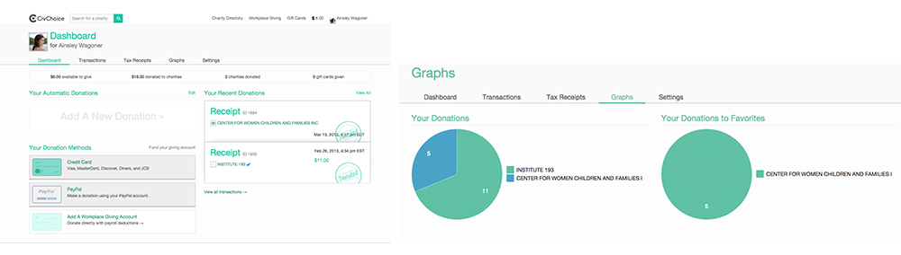

CivChoice & FivePowered
Products for nonprofits to connect with their donors.
Working with CirrusMio, I learned my first lessons about scoping a product. We formed as a start-up to build a social networking platform for non-profits, volunteers, and donors. We built and launched and things did not go like we had hoped.
We decided to we would focus on building products
that addressed the donor-volunteer-nonprofit ecosystem one piece at a time,
and to work with organizations in our community of Lexington, Kentucky.
With this shift, we started building things we believed in and could see
the immediate impact of. The difference was huge.
Among nonprofits, a large source of donations comes from workplace giving
campaigns. The leading platform for workplace giving campaigns is currently
United Way. But United Way does not facilitate donations to every
501(c)(3) organization, and this excludes a lot of nonprofits, particularly
grassroots organizations.
CivChoice facilitates workplace-giving campaigns to
any IRS-registered not-for-profit organization. It does this by using a
digital currency in exchange for any dollar amount that is then redistributed
to the non-profit of the user’s choice.
I developed the branding and identity of CivChoice in order to communicate
its goals of inclusive giving, trustworthiness, and accessibility. I also
worked on the user interaction flows and user experience so that employers
and individual employees could intuitively navigate the system.

This was my first project working with a front-end team, and my teammates
at CirrusMio were incredible mentors as I worked with Ruby code and wrote CSS.
I created the user interface art assets and worked on the implementation
of the design in the code.

CivChoice was a great learning experience for me because it came out of a
larger product called CivicRush. We learned with CivicRush to focus on one
aspect of the donor - nonprofit relationship and focus on improving that experience.